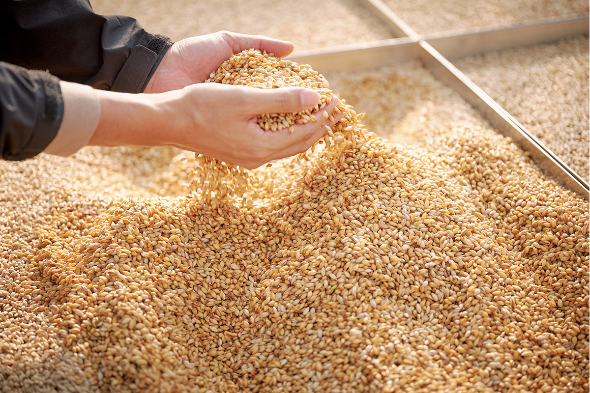
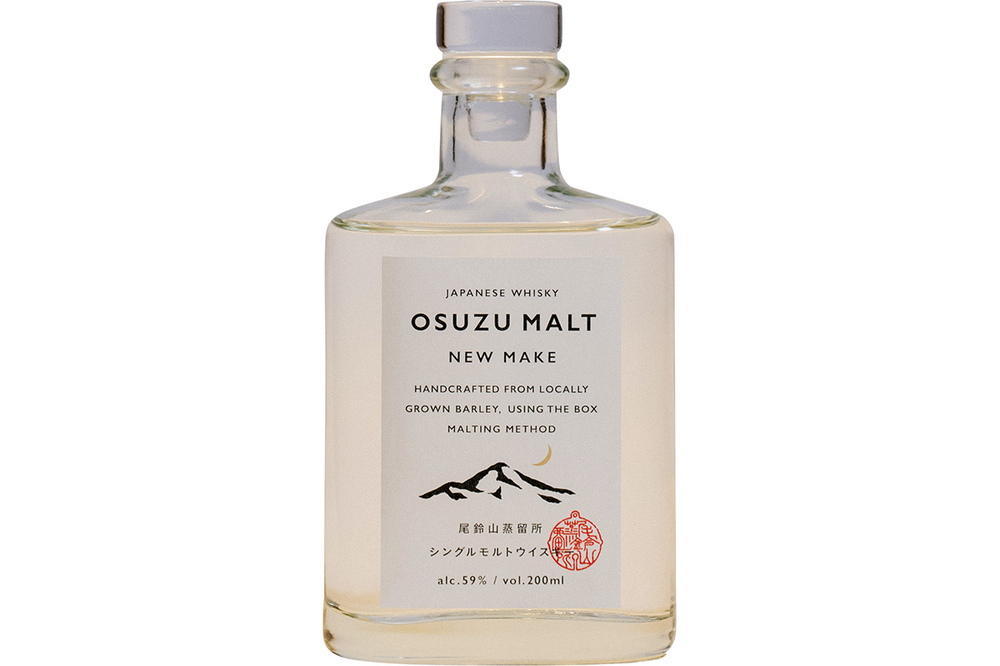
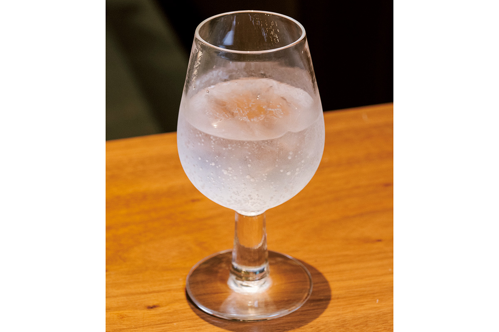
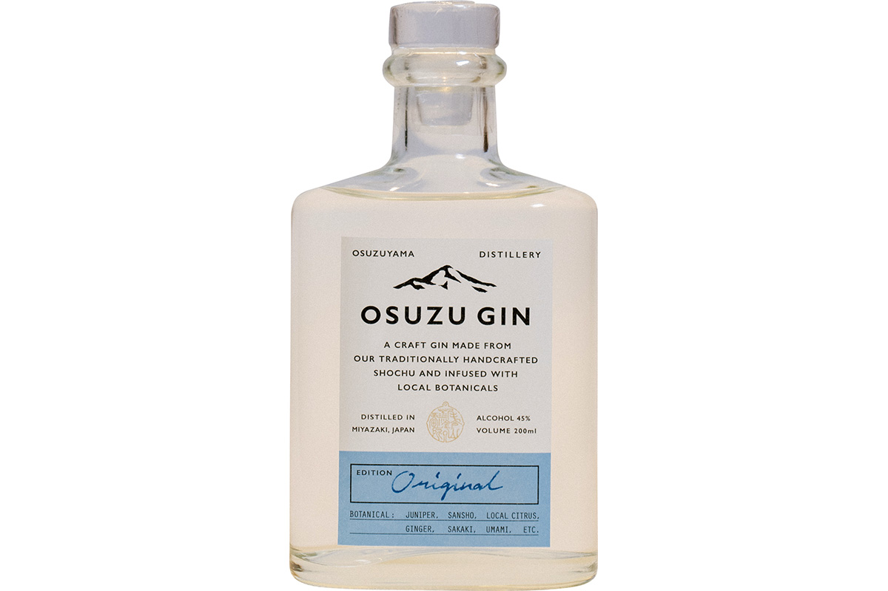
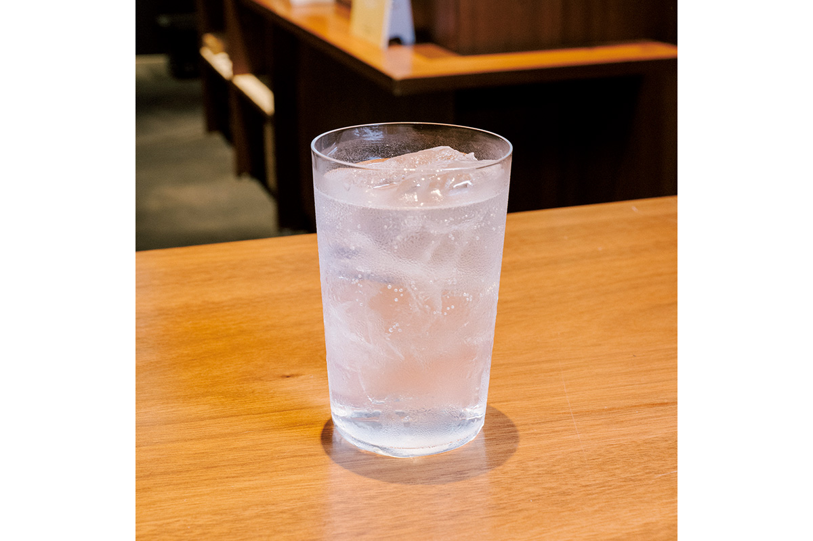

Префектура Миядзаки · гора Осудзу · напитки
Osuzuyama Distillery: джин и виски от мастеров сётю из Миядзаки

Японские крепкие напитки переживают бум, и новые винокурни появляются одна за другой. Владелец винной лавки из Фукуоки, который много лет рассказывает о спиртном в своих магазинах и на дегустациях, советует присмотреться к тем, за кем стоит культура места. Один из его примеров: Osuzuyama Distillery в горах префектуры Миядзаки.
Взгляд
Напиток, в котором есть место
Крафтовый джин и другие дистилляты долго ассоциировались в Японии с коктейлями в баре. К 2020 году их стало видно повсюду, и выбрать трудно. Наш собеседник делит такие напитки на две группы.
«Напиток из импортного технического спирта похож на моду. Его можно с удовольствием пить, но джин, который делает винокурня сётю, несёт в себе культуру своей земли. А напиток с культурой это уже другой уровень»
владелец винной лавки из Фукуоки
Обычно дистиллят получают так: берут готовый базовый спирт и перегоняют его ещё раз. Винокурни, которые возвращаются к ремеслу с самого начала, с сырья и брожения, он считает будущим всей японской алкогольной отрасли. Такие напитки уже не укладываются в привычные рамки «сётю» или «джин»: они рассказывают о месте, где их сделали.
Винокурня
Osuzuyama Distillery и Kuroki Honten
Osuzuyama Distillery стоит глубоко в лесу у подножия горы Осудзу, рядом с водопадами. Её открыла винокурня Kuroki Honten из города Таканабэ, примерно за двадцать лет до 2020 года. Kuroki Honten известна сётю «Нака-нака» и «Хякунэн но кодоку» и много сделала для того, чтобы сётю стал популярным по всей стране. Отдельную винокурню в горах построили, чтобы работать ещё более по-ремесленному, а теперь здесь взялись и за дистилляты.
«Они всегда делали сётю как „духи земли“, которые рождаются из своего места. Придумали, как возвращать барду от сётю обратно в почву, сами занялись земледелием. Их джин и виски продолжают рассказ о той же культуре, и я уверен, что так будут работать винокурни будущего»
владелец винной лавки из Фукуоки
Виски
OSUZU MALT: ячмень с собственного поля
Для своего первого виски винокурня всё сделала сама: ячмень выращивает её же сельскохозяйственная компания, солод проращивают вручную. Первая перегонка идёт на кубе для сётю, вторая в медном перегонном кубе.

В июле 2020 года винокурня выпустила OSUZU MALT NEW MAKE, ещё не выдержанный в бочке спирт, тиражом 4500 бутылок. Бутылка на 200 мл стоила 2750 иен с налогом в 2020 году, крепость 59 градусов. Дальше винокурня собиралась выдерживать виски в бочках из местного каштана, криптомерии и сакуры и выпускать понемногу каждый год.
Как пить: развести пополам с водой. Так вкус чувствуется в чистом виде, без лишнего. Углы у него уже сглажены, и интересно, каким он станет после выдержки.

Джин
OSUZU GIN: вкус Миядзаки
Основа OSUZU GIN это сётю из батата собственного производства винокурни. Кроме можжевельника в него идут местные растения: цитрус хюганацу, кумкват, японский перец сансё, грибы сиитакэ и ветви сакаки, священного кустарника, которые в Японии ставят на домашний алтарь. Оригинальную версию выпустили в июле 2020 года, а потом винокурня планировала выпускать ограниченные партии с другими травами.

«Мягкий, и вкус у него на редкость сбалансированный»
владелец винной лавки из Фукуоки
Как пить: самый классический вариант, джин-тоник. Джин хорошо держит баланс и не спорит с едой, поэтому его можно пить и за ужином.

Об экскурсиях по винокурне на официальном сайте ничего не сказано. Джин и виски продаются в онлайн-магазине винокурни: по оригиналу 2020 года, заказ доставляют примерно за два рабочих дня.
Osuzuyama Distillery
- Адрес
- префектура Миядзаки, уезд Кою, посёлок Кидзё, Исикаваути, 656-17
- Телефон
- +81 983-22-3973
- Цены / Вход
- OSUZU MALT NEW MAKE 2750 иен (200 мл), OSUZU GIN 2035 иен (200 мл), с налогом, по оригиналу 2020 года
- Сайт
- osuzuyama.co.jp
Фото: Тимоте Ламбрек.